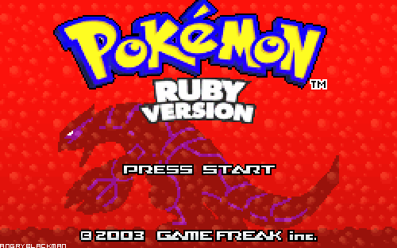

Ruby

A Programmer's Best Friend
#WebDayESGI 2014 - @rhannequin
À propos
Rémy Hannequin
- Développeur Web Ruby / JavaScript
- RATP & ESGI 5A EB
- Laboratoire Web ESGI
Ruby c'est quoi ?

Merci Google
Langage interprété
Orienté objet
Typage fort et dynamique
Multi-paradigmes
Histoire
Créateur Yukihiro « Matz » Matsumoto
24/02/93 création de Ruby
25/12/96 Ruby 1.0
24/02/13 Ruby 2.0
Philosophie
Écrire des algos en anglais
Designé pour la productivité et le fun
Orienté développeur plutôt que machine
C'est le développeur qui écrit le code, c'est lui le maître
Implémentation
Toute donnée est un objet, y compris les types
Toute fonction est une méthode
Toute variable est une référence à un objet
Multi-paradigmes
Orienté objet
Procédural
Fonctionnel
Syntaxe
Spécificités
TOUT est objet
1 + 2 # => 3
1.+(2) # => 3
true == true # => true
true.==(true) # => true
Syntaxe user-friendly
def is_ok?
true
end
is_ok? # => true
str = "hello"
str.capitalize # => "Hello"
str # => "hello"
str.capitalize! # => "Hello"
str # => "Hello"
null est nil
foo = nil
foo.class # => NilClass
foo.nil? # => true
Conditions
Condition classique
if ruby > php
print "You don't say"
else
print "You kiddin' me??"
end
Condition in-line
if true then print "ok"
Condition inverse
do_it unless able_to
Boucles
for...in
for cat in cats
print "Owww #{cat} <3"
end
While
while is_night
sleep
end
Inversée & in-line
work until tired
Symboles
Qu'est-ce que c'est
Décrire un objet de façon plus efficace qu'avec une chaîne de caractères
:foo
# => :foo
:foo.class
# => Symbol
Utilisation
{ :foo => 'bar' } # ancienne syntaxe
{ foo: 'bar' } # syntaxe ruby 1.9
do_this if query == :get
send_message_to_server :post, filename
Performance
bar = :foo
baz = :foo
bar == bar # => true
bar.object_id == baz.object_id # => true
bar = :foo
baz = 'foo'.to_sym
bar == bar # => true
bar.object_id == baz.object_id # => true
Hash
Déclaration
{ 1 => 'one' }
{ 'one' => 1 }
{ one: 'one' }
{ arr: [] }
{ vrai: true }
Tips et méthodes utiles
h = { foo: 'bar' }
h[:foo] # => "bar"
h.empty? # => false
h.has_key? 'nope' # => false
h.has_value? 'bar' # => true
h.keys # => [:foo]
h = { first: 'one', second: 'two' }
h.reject! { |k, v| k == :first }
h # => {:second=>"two"}
does = is = { true => 'Yes', false => 'No' }
does[10 == 50] # => "No"
is[10 > 5] # => "Yes"
Blocks
%w(Bulbizarre Salamèche Carapuce).each do |pokemon|
puts "Voulez-vous combattre Régis avec #{pokemon} ?"
end
array = [1, 2, 3, 4]
array.iterate! do |n|
n ** 2
end
puts array.inspect
# => [1, 4, 9, 16]
Classes, modules et mixins
class Human
attr_accessor :name
def initialize(name)
@name = name
end
end
class Dev < Human
attr_accessor :skills
def initialize(name, skills)
super(name)
@skills = skills
end
end
> r = Dev.new "rhannequin", ["backend", "noob"]
> print "My name is #{r.name} "
> print "and my skills are #{r.skills.join(', ')}."
#=> My name is rhannequin and my skills are backend, noob.
Les petits plus
> is_allowed?
#=> true
> (1..9).to_a
#=> [1, 2, 3, 4, 5, 6, 7, 8, 9]
> [1...10].to_a
#=> [1, 2, 3, 4, 5, 6, 7, 8, 9]
> 5.times {print "lol "}
#=> lol lol lol lol lol
Un petit dernier pour la route
def some_method(a, b, c=5, *p, q)
end
some_method(25, 35, 45)
a=25 b=35 c=5
p=[] q=45
some_method(25, 35, 45, 55)
a=25 b=35 c=45
p=[] q=55
some_method(25, 35, 45, 55, 65)
a=25 b=35 c=45
p=[55] q=65
some_method(25, 35, 45, 55, 65, 75)
a=25, b=35 c=45
p=[55, 65] q=75
Quelle utilisation
aujourd'hui ?
Évolution
- Ruby : [...]
- RubyOnRails : [...]
- Sinatra : [...]
Actuellement en production
- Github